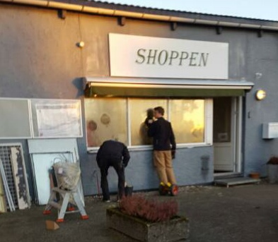

<div class="pages">
  <div data-page="571-nyt-vindue-i-shoppen" class="page navbar-fixed toolbar-fixed" >
    <div class="navbar">
      <div class="navbar-inner">
        <div class="left">
          <a href="#" class="link back icon-only"><i class="icon icon-back"></i></a>
          <!-- <a href="#" class="back link icon-only"><i class="icon icon-back"></i></a> -->
        </div>
        <div class="center">Nyt vindue i Shoppen</div>
        <!-- <div class="right"></div> -->
        <div class="right">
        </div>
      </div>
    </div>
    <div class="page-content" style="padding-top:45px;">
       <div class="content-block">
          <p><b>Nyt vindue i Shoppen</b></p>
          <center></center>
          <p>Vinduet til Shoppen var råddent. Derfor bliver det nu skiftet.
          <br /><br />
          Det betyder samtidig at der er etableret ny tyverisikring, så de gamle gitre ikke længere er nødvendige, og det giver et løft til Shoppen der ikke længere fremtræder som Fort Knox.
          <br /><br /> 
          Kom selv og se lørdag den 17. december og søndag den 18. december, hvor du kan købe de sidste julegaver i Shoppen.</p>
        </div>
    </div>
    </div>
    </div>
  </div>
</div>
